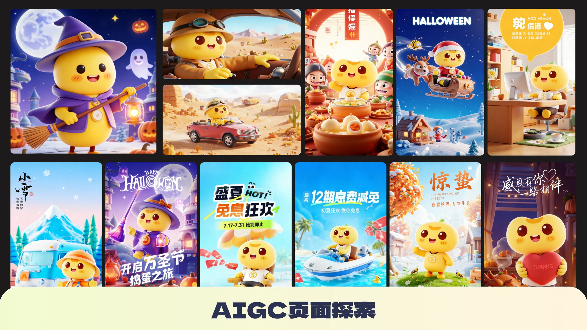
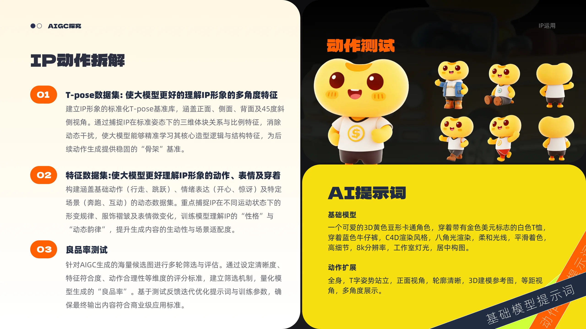
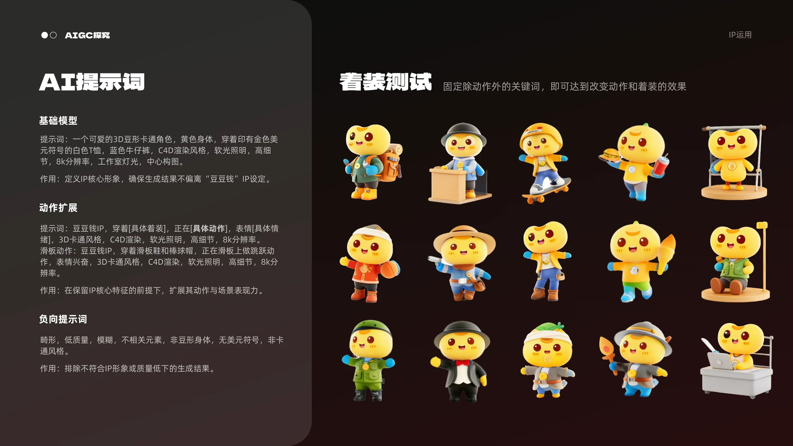
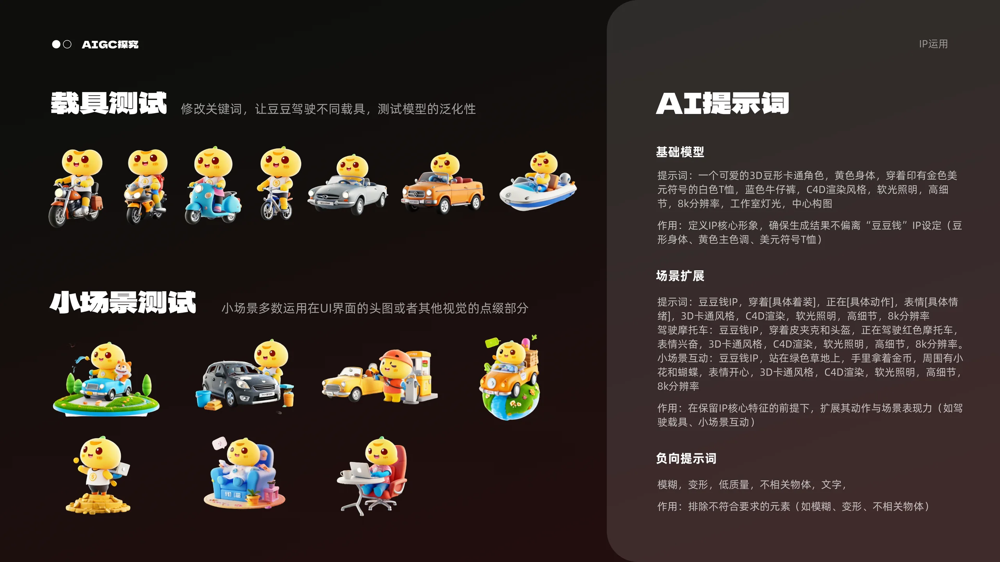
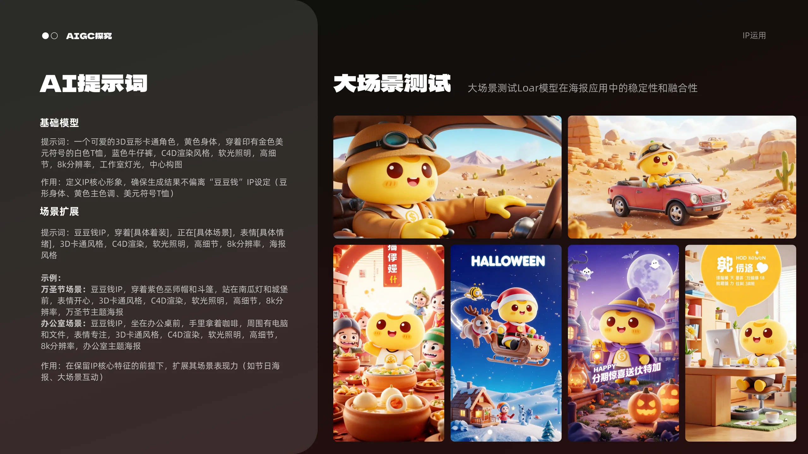
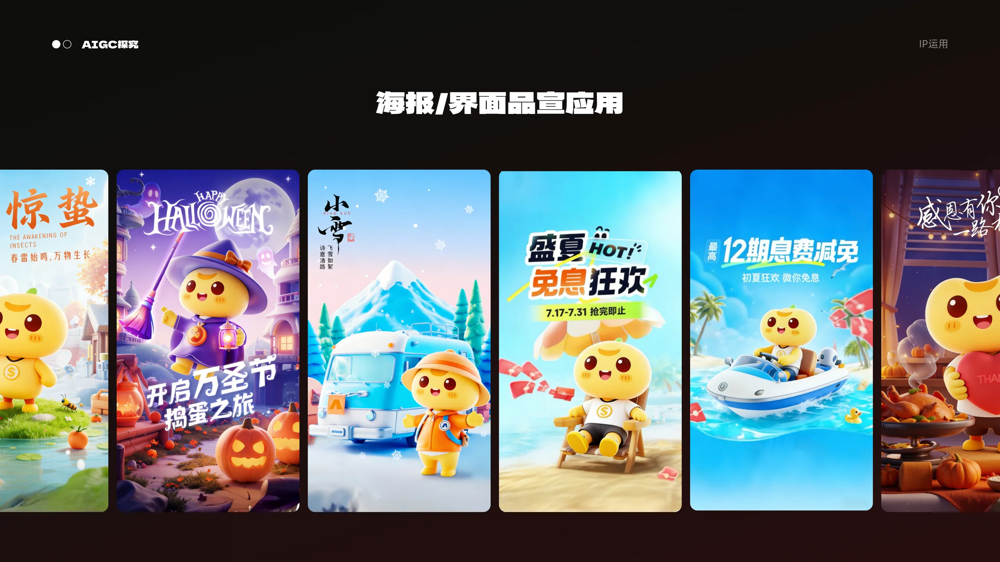
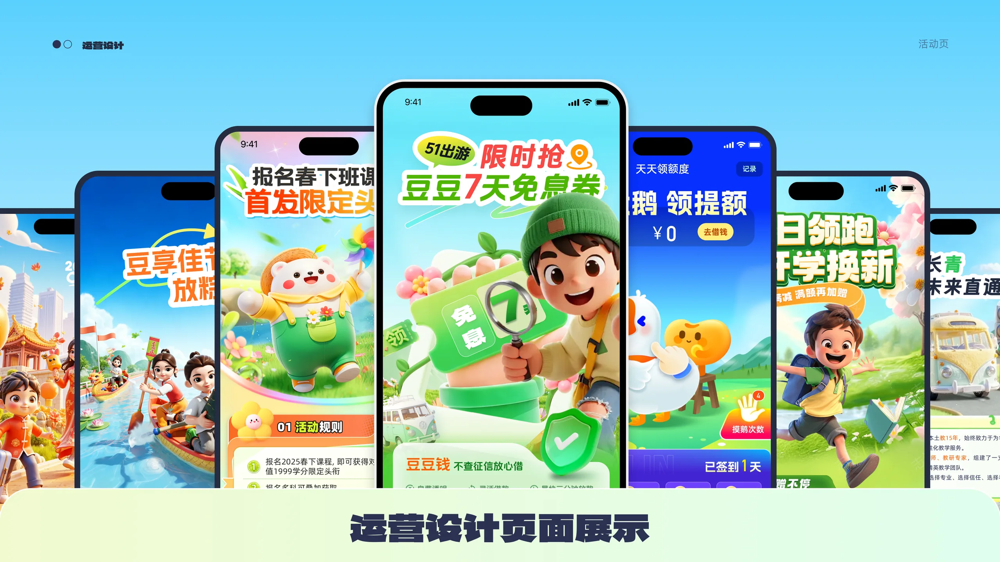
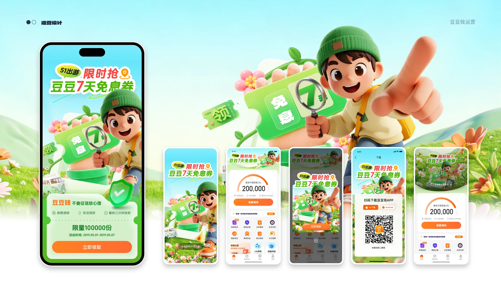
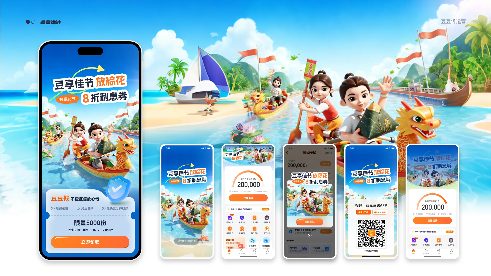
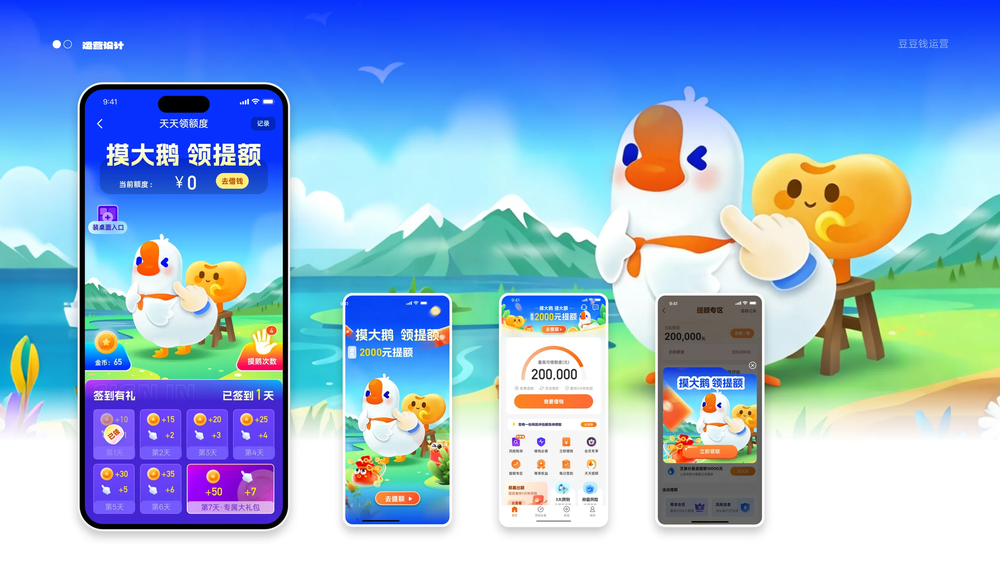

01 / GENERATIVE VISUAL
VISUAL DESIGN · CREATIVE DIRECTION · AI WORKFLOW
品牌视觉
与 AIGC 探索
将 AI 作为视觉研发与方案探索的加速器，从概念、风格到图像细化，建立可迭代、可控制的创意工作流。
SCROLL TO EXPLORE
CREATIVE APPROACH
从一个概念，
扩展出完整的视觉语言。
通过提示词策略、构图探索、风格统一与人工精修，将生成式图像转化为可用于品牌、IP 和视觉传播的设计资产。








